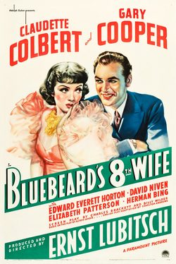

Bluebeard's Eighth Wife

Starring: Claudette Colbert, Gary Cooper, Edward Everett Horton
Director: Ernst Lubitsch
Writer: Charles Brackett, Billy Wilder, Alfred Savoir
Producer: Ernst Lubitsch
Bluebeard's Eighth Wife is a 1938 American romantic comedy film produced and directed by Ernst Lubitsch and starring Claudette Colbert and Gary Cooper. The film is based on the 1921 French play La huitième femme de Barbe-Bleue by Alfred Savoir and the English translation of the play by Charlton Andrews. The screenplay was the first of many collaborations between Charles Brackett and Billy Wilder.
Trivia
- Based on Bluebeard's Eighth Wife (play written by Alfred Savoir).
- After Wilder signed an employment contract with Paramount Pictures in 1936, Manny Wolf, story editor and Paramount writer's department head, teamed him with Charles Brackett.
- Wolf suggested to Lubitsch that Wilder write Bluebeard's Eighth Wife together with the younger Brackett, influencing Wilder to write more modern than his script for Angel.
- Under Lubitsch's supervision, Wilder and Brackett spent a year cowriting the screenplay.
Previous Showings
7 Runs • 3 Festivals
Original Billings: 1 run (April 7, 1938)
Original Run: April 7, 1938 (Thursday - Saturday)
All runs on record (7):
- April 7, 1938 (Thursday - Saturday)Claudette Colbert, Gary Cooper
- February 29, 1988w/ Angel
- January 21 - 22, 1992w/ Angel
- March 2 - 3, 1994w/ Ball of Fire
- May 20 - 21, 2015Cary Grant, plus Ernst Lubitsch and Rouben Mamoulianw/ High, Wide and Handsome
- March 9 - 10, 2017British and Lubitschw/ Angel
- March 6 - 7, 2025Lubitsch, Mamoulian, Sternberg Three Great Directorsw/ The Song of Songs